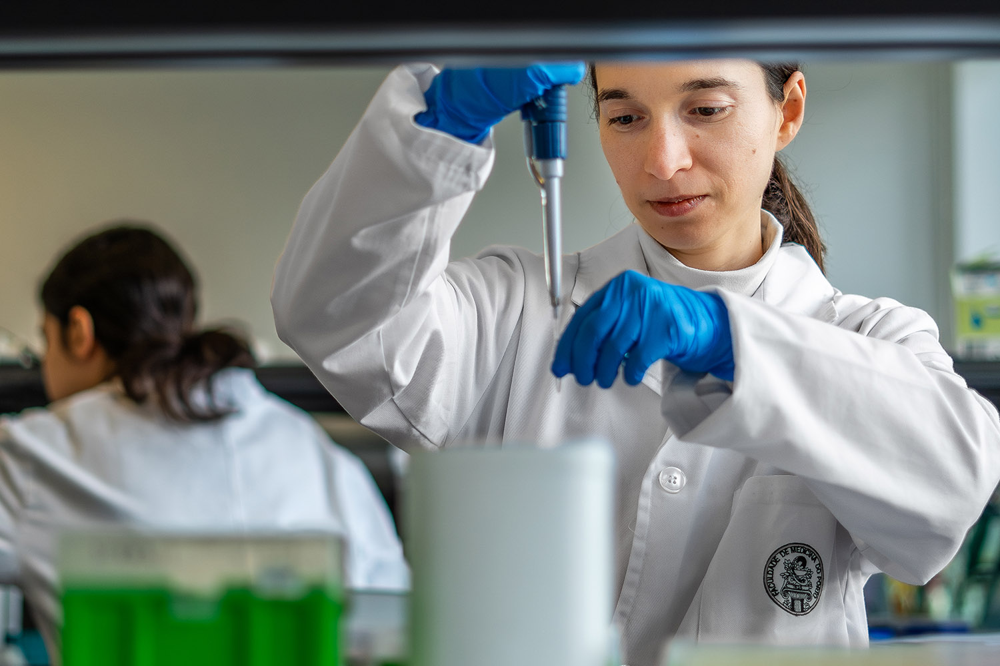

Applications for International students 2024/2025 are open!
There are over 700 vacancies for 54 undergraduates and intergrated master's courseat U.Porto. Applications (1st phase) until February 7th!
Universidade de porto
Search
Applications for International students 2024/2025 are open!
There are over 700 vacancies for 54 undergraduates and intergrated master's courseat U.Porto. Applications (1st phase) until February 7th!
Study
Gathering the most complete offer of training programmes in Portugal, the 14 faculties of the U.Porto offer unique conditions to those who want to build an academic path of excellence and properly valued by the labour market.
Which course are you looking for?
Courses from A to Z:
News
All news
Ciencia e Inovacao | Merito
U.Porto domina bolsas de investigacao da Liga Portuguesa Contra o Cancro
20 January 2025
Ciencia e Inovacao | Merito
U.Porto domina bolsas de investigacao da Liga Portuguesa Contra o Cancro
20 January 2025
Ciencia e Inovacao | Merito
U.Porto domina bolsas de investigacao da Liga Portuguesa Contra o Cancro
20 January 2025

We are a University
of Excellence!
With over 100 years of history, the University of Porto is a leading teaching and scientific research institution in Portugal and worldwide.
Considered the best Portuguese University and one of the best 100 European institutions according to the most important Higher Education rankings, U.Porto combines quality teaching and excellent research with the best academic experience.
We are waiting for you!
See more